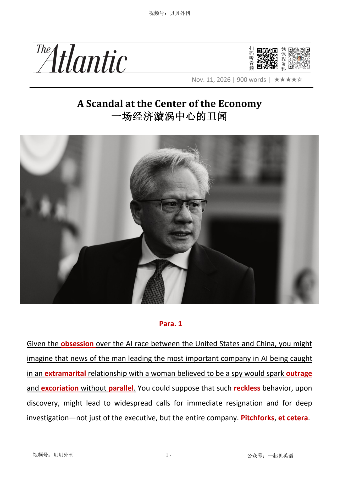

02 HEADLINE / 标题中英文解释
A Scandal at the Center of the Economy
一场经济漩涡中心的丑闻

A Scandal at the Center of the Economy
一场经济漩涡中心的丑闻
文章从一个反常现象写起：黄仁勋被曝与一名疑似间谍的女性有婚外情，按理应该引发强烈谴责和彻底调查，但硅谷富豪、投资人和特朗普却迅速为他辩护。
他们虽承认黄仁勋犯错，却更强调他对美国人工智能领导地位“无可替代”。
作者认为，这不只是权势男性彼此袒护。
英伟达已经深度进入美国股市和人工智能产业链。
它投资其他人工智能企业，支撑“美股七巨头”生态；自2023年以来，美股每赚取1美元，约有15美分来自英伟达。
因此，作者把美国比作依赖英伟达的“英伟达国家”。
黄仁勋本人又是这家关键公司的支柱。
他是英伟达创始人，也会影响美国对人工智能的政策讨论。
英伟达是美国经济的关键支点，而黄仁勋又是英伟达的关键支点，他因而变成“大到不能倒”的人物。
这种经济上的依赖，正是各方急于淡化丑闻的核心原因。
这也给政客造成两难。
特朗普看重股市和人工智能投资，不愿危及英伟达。
民主党则在中期选举中主张约束科技寡头、强化企业问责，但如果逼黄仁勋辞职或深入调查，又可能引发英伟达股价和整个人工智能投资体系的波动。
道德问责与金融利益因此发生冲突。
最后，作者将丑闻视为人工智能竞赛所造成的“扭曲激励”。
美国一方面将中国人工智能视为存亡威胁，另一方面却因为需要维持体系运转和资金流动，容忍黄仁勋与所谓对手之间的风险关系。
当国家命运、权贵财富与一场技术金融豪赌绑在一起时，参与者就会容忍风险和矛盾。
黄仁勋因而成了人工智能热潮本身的化身。
The article begins with a surprising reaction to Jensen Huang's scandal. Huang was reported to have had an affair with a woman believed to be a spy.
Many people expected anger, calls for his resignation and a full investigation. Instead, powerful people in Silicon Valley and Washington defended him.
Investors, Elon Musk and Donald Trump said that Huang had made a mistake but was still very important to America's AI leadership. The writer says this is not only about powerful men protecting one another.
Nvidia has become central to the American stock market and the AI industry. It invests in other AI companies and supports a large part of the big-tech ecosystem.
Since 2023, Nvidia has produced about 15 cents of every dollar returned by the American stock market. The writer therefore compares the United States to an 'Nvidia-state'.
Huang is also central to Nvidia itself. He founded the company in 1993 and his ideas about AI can influence US policy.
Nvidia is a key part of the American economy, and Huang is a key part of Nvidia. This makes him seem 'too big to fail'.
People may be protecting him because they fear that losing him could hurt the company, the market and the wider AI boom. Politicians now face a difficult choice.
Trump cares greatly about the stock market and is unlikely to damage Nvidia. Democrats want stronger control of technology companies and greater corporate responsibility.
However, pushing Huang to resign or investigating him more deeply could make Nvidia's share price unstable and shake the larger system of AI investment. Moral responsibility and financial interests are pulling in different directions.
The writer ends by describing the warped incentives of the AI race. Washington treats China's AI power as a serious threat, yet it may ignore Huang's risky relationship because it wants the system and the money to keep moving.
When a country's future and powerful people's fortunes are tied to one complex technological bet, they may accept great risks and clear contradictions. Huang has become a symbol of the AI boom and of both its promise and its danger.
黄仁勋丑闻引发的反常舆论（Para 1-3） ├─ 预期反应：丑闻本应掀起强烈声讨 ├─ 现实走向：硅谷大佬、特朗普纷纷出面保他 └─ 浅层解读：权贵抱团，但解释并不充分 英伟达的特殊地位（Para 4-5） ├─ 经济权重：英伟达深刻绑定美股与AI生态 ├─ 个人价值：黄仁勋无可替代，“大而不能倒” └─ 核心逻辑：金融体系被英伟达深度裹挟 政客两难抉择（Para 6） ├─ 特朗普：看重股市，不愿破坏AI增长 ├─ 民主党：要追责又怕引发市场震荡 └─ 根本矛盾：道德评判和资本利益脱节 AI竞赛的扭曲激励（Para 7-8） ├─ 讽刺现实：一边视中国AI为威胁，一边放过风险 ├─ 内在困境：为赢竞赛容忍巨大风险、认知失调 └─ 总结：黄仁勋就是AI热潮的缩影
Given the obsession痴迷 over the AI race between the United States and China, you might imagine that news of the man leading the most important company in AI being caught in an extramarital婚外的 relationship with a woman believed to be a spy would spark outrage愤怒 and excoriation严厉谴责 without parallel极其相似的人. You could suppose that such reckless鲁莽的 behavior, upon discovery, might lead to widespread calls for immediate resignation and for deep investigation—not just of the executive, but the entire company. Pitchforks干草叉, et cetera以及诸如此类.
鉴于美国与中国之间的人工智能竞赛已然引发近乎狂热的关注，你或许会以为，当人工智能领域最重要的公司掌舵人被曝与一名疑似间谍的女性存在婚外情时，必然会招致空前的愤怒与口诛笔伐。你也许会认为，如此轻率的行为一经曝光，势必引发铺天盖地的问责声浪：不仅要求这位高管立即辞职，还要对他本人乃至整个公司展开彻查。群情激愤，讨伐四起，不一而足。
It is curious, then, that, as news came out that the Nvidia CEO, Jensen Huang, had had a romantic relationship with a businesswoman, notable factions派系 of Silicon Valley and Washington, D.C., seemed nonplussed困惑的. “Even incredible humans make mistakes,” Bill Ackman, the billionaire hedge-fund manager, posted on X yesterday. “We should all support him and his family. Onward向前.” The venture capitalist Shaun Maguire offered a five-point analysis of Huang’s situation, noting that the CEO did something “incredibly dumb” and “bad for America,” but that “my guess is there was no bad intention.” He then argued, “I believe Jensen is irreplaceable不可替代的 for America’s AI leadership.” Elon Musk agreed. From there, the posts, written before we know all the facts of the scandal, got only more absurd荒谬的, including defending Huang’s affair on the grounds充分的理由 that his kids are adults now.
然而，颇为耐人寻味的是，当英伟达首席执行官黄仁勋与一名女商人存在恋爱关系的消息传出后，硅谷和华盛顿的某些重要势力的反应却出奇地平静。亿万富翁对冲基金经理比尔·阿克曼发文呼吁大家支持黄仁勋和他的家人。风险投资家肖恩·马奎尔虽承认他的行为“愚蠢至极”且“有损美国利益”，却又称他并无恶意，而且对美国的人工智能领导地位无可替代。马斯克也表示赞同。事实尚未完全查清，辩护之词却愈发荒诞，甚至有人以黄仁勋的孩子已经成年为由为他开脱。
Later in the day, Donald Trump echoed重复 calls for Huang to stay on as CEO. He called Huang “an honorable guy.” The president, who has had extramarital affairs of his own and is credibly accused of sexual crimes by numerous women, sounded unbothered不受干扰的. “I think he probably has an excuse for it,” Trump added. It’s tempting吸引人的 to see this as little more than不过是 powerful men defending their kind—a classic example of bros before pressing紧急的 technological-geopolitical技术与地缘政治交织的 security imperatives重要紧急的事. But that explanation misses both Huang’s and Nvidia’s centrality核心地位 in American politics and the global financial system.
当天晚些时候，特朗普也附和了要求黄仁勋留任首席执行官的呼声，称他是“一位值得尊敬的人”。这位总统本人也曾有过婚外情，且受到多名女性可信度颇高的性犯罪指控，如今对此事似乎毫不在意。我们很容易将这一切归结为有权有势的男人在袒护自己人——不过是“兄弟情谊”凌驾于迫在眉睫的技术与地缘政治安全大局之上的又一个典型案例。然而，这种解释忽略了黄仁勋和英伟达在美国政治以及全球金融体系中的核心地位。
Last year, I described the U.S. as an Nvidia-state, much like Saudi Arabia is a petrostate石油国家. That’s because, in recent years, the company has become one of the biggest investors of other AI companies. You could make a strong case论据 that Nvidia helps support big chunks厚块 of the Magnificent Seven美股“七巨头” ecosystem生态系统, the tech companies that are responsible for roughly a third of the S&P 500’s current value. Nvidia stock has produced “15 cents of every dollar the American stock market has returned since 2023.”
去年，我曾将美国形容为一个“英伟达国家”，就像沙特阿拉伯是一个石油国家一样。原因在于，近年来，英伟达已成为其他人工智能企业最重要的投资者之一。可以说，英伟达在很大程度上支撑着“美股七雄”所构成的生态体系，而这些科技公司合计占据了标普500指数当前总市值的约三分之一。自2023年以来，美股每美元收益里，就有15美分来自英伟达的股价涨幅。
Huang, who founded Nvidia in 1993, is the company’s key figure, praised by many in the tech industry as one of the visionaries有远见的人 responsible for the rapid acceleration of artificial intelligence. Huang’s thinking on issues such as AI doomerism末日悲观主义 (he’s anti-doom死亡) influences U.S. policy. This centrality is why one tech analyst implied that replacing Huang was a comical滑稽的 suggestion. Huang is a singular非凡的 figure: the linchpin关键性人物 of the company that is arguably the linchpin of the American economy. Framed表达 another way, Nvidia has much of the financial system in a hostage人质 situation. Huang is too big to fail. Which may be why so many people seem motivated to downplay对…轻描淡写 or protect him right now.
黄仁勋1993年创立英伟达，他也是这家公司的灵魂人物。在科技行业许多人眼中，他是推动人工智能迅猛发展的关键远见者之一。他对人工智能末日论等议题的看法也在影响美国政策。黄仁勋是独一无二的存在：他是这家公司的关键支柱，而英伟达本身又可以说是美国经济的关键支柱。换个角度来看，英伟达实际上已经将整个金融体系置于人质般的境地。黄仁勋成了一个“大到不能倒”的人物，或许正因如此，才会有如此多的人急于淡化丑闻的严重性，出面保护他。
As more information about the relationship comes out, lawmakers will have to choose whether to take their cues from the markets or push for more investigation. Trump, who has been reliably motivated in his presidency by the stock market, seems indebted感激的 to Nvidia’s performance in the market, as well as to AI investment in general. He’s unlikely to do anything to jeopardize危及 that. Democrats are in a particularly interesting position, fresh off刚结束…… a midterm rout惨败 centered on taking a strong stance观点 against tech oligarchs寡头, AI, and data centers and in favor of corporate accountability问责. To press hard on Huang to resign, or to dig deeper into what he and the company knew about the relationship and when, will inevitably risk adding volatility不稳定 to Nvidia’s share price and, by virtue, the larger Gordian knot戈耳狄俄斯之结 of AI investment that is predicated on relentless不停的 growth and continued scale. All of this is to say that the moral道德的 case regarding Huang is much different from the one that Trump and those with a financial interest in Nvidia’s success will likely consider.
随着这段关系的更多细节逐渐浮出水面，国会议员将不得不作出选择：究竟是听从市场的风向，还是推动更深入的调查？特朗普一贯以股市为行为导向，英伟达的股价表现以及整体人工智能投资热潮，都让他心生欢喜。他不太可能采取任何危及这一切的行动。民主党则处于一个颇为微妙的境地：无论是强力施压要求黄仁勋辞职，还是深入追查他本人及英伟达究竟何时知晓这段关系、又掌握了多少内情，都可能加剧英伟达股价的波动，进而撼动那团依靠持续扩张与高速增长维系的人工智能投资乱局。归根结底，围绕黄仁勋的道德审判，与特朗普以及那些在经济利益上与英伟达的成功深度捆绑的人所考量的，根本不是同一回事。
This scandal holds an irony奇异可笑之处 that’s especially befitting适合 of the AI moment. Huang seemingly has cozied up to his industry’s No. 1 foe敌人, China. Instead of denouncing谴责 him, Washington and Silicon Valley are motivated to circle the wagons around Huang, in part because doing so keeps the system moving and the money flowing. The build at all costs rationale基本原理 that dictates决定 treating China’s AI prowess杰出的技能 as an existential关乎存亡的 threat is also driving the same people to brush past轻擦 an egregious极坏的 dalliance短暂的情感关系 with that enemy.
这场丑闻还带有一种格外符合当下人工智能时代的讽刺意味。黄仁勋似乎与自己所在行业的头号对手——中国——走得过于亲近。然而，华盛顿和硅谷非但没有对他口诛笔伐，反而非常积极地抱团维护他，因为这样做能够让整个体系继续运转，让资本持续流动。这套不惜一切代价加速发展的逻辑，本将中国人工智能实力视作关乎存亡的威胁，如今同一批人却选择对这桩与对手的不当纠缠视而不见。
This is the type of warped思想反常的 incentives激励 that the AI race produces. Playing the game necessitates使成为必要 embracing preposterous荒唐的 risk to justify an idealized把…理想化 future outcome. To run this race requires its participants to withstand承受 intense cognitive认知的 dissonance不一致 and behave in ways that make them appear ever more inscrutable难以理解的 and reckless to those who are not involved. If nothing else, Huang is a useful example to understand what happens when the fortunes of countries and many of its most powerful citizens are all tied up in one progressively持续稳定地 intricate错综复杂的 technological and financial bet. In this way, Huang is the AI boom personified是…的化身, a hyperobject超物体 of a man who has wound his way into the center of the economy and whose influence, depending on how you look at it, may usher in开启 either prosperity or untold难以形容的 doom.
这正是人工智能竞赛所催生的激励机制的扭曲之处。参与这场博弈，就意味着必须拥抱荒谬的风险，只为证明一个理想化的未来终将实现。要想跑完这场竞赛，参与者就必须承受巨大的认知失调；而在局外人看来，他们的行事方式也因此显得愈发难以捉摸，愈发鲁莽失度。至少，黄仁勋是一个极具代表性的样本，让我们得以看清：当一个国家的命运，以及这个国家许多最有权势之人的财富与前途，都被捆绑在同一场日益复杂的技术与金融豪赌之上时，究竟会发生什么。从这个意义上说，黄仁勋就是人工智能繁荣时代的化身。他早已深深盘踞于经济体系的核心，其影响力究竟会为世界带来繁荣，还是将人类引向无法估量的灾难，取决于我们从何种角度审视他。
痴迷；着魔；困扰
the state in which a person's mind is completely filled with thoughts of one particular thing or person in a way that is not normal
Her fear of flying is bordering on obsession.她怕乘飞机几乎到了不可救药的地步。
Given the obsession over the AI race between the United States and China, you might imagine that news of the man leading the most important company in AI being caught in an extramarital relationship with a woman believed to be a spy would spark outrage and exc…
鉴于美国与中国之间的人工智能竞赛已然引发近乎狂热的关注，你或许会以为，当人工智能领域最重要的公司掌舵人被曝与一名疑似间谍的女性存在婚外情时，必然会招致空前的愤怒与口诛笔伐。你也许会认为，如此轻率的行为一经曝光，势必引发铺天盖地的问责声浪：不仅要求这位高管立即辞职，还要对他本人乃至整个公司展开彻查。群情激愤，讨伐四起，不一而足。
婚外的
An extramarital affair is a sexual relationship between a married person and another person who is not their husband or wife.
Her husband has admitted having an extramarital affair. 她丈夫承认了有出轨行为。
Given the obsession over the AI race between the United States and China, you might imagine that news of the man leading the most important company in AI being caught in an extramarital relationship with a woman believed to be a spy would spark outrage and exc…
鉴于美国与中国之间的人工智能竞赛已然引发近乎狂热的关注，你或许会以为，当人工智能领域最重要的公司掌舵人被曝与一名疑似间谍的女性存在婚外情时，必然会招致空前的愤怒与口诛笔伐。你也许会认为，如此轻率的行为一经曝光，势必引发铺天盖地的问责声浪：不仅要求这位高管立即辞职，还要对他本人乃至整个公司展开彻查。群情激愤，讨伐四起，不一而足。
愤怒；义愤；愤慨
a strong feeling of shock and anger
The judge's remarks caused public outrage.裁判的话引起了公愤。
Given the obsession over the AI race between the United States and China, you might imagine that news of the man leading the most important company in AI being caught in an extramarital relationship with a woman believed to be a spy would spark outrage and exc…
鉴于美国与中国之间的人工智能竞赛已然引发近乎狂热的关注，你或许会以为，当人工智能领域最重要的公司掌舵人被曝与一名疑似间谍的女性存在婚外情时，必然会招致空前的愤怒与口诛笔伐。你也许会认为，如此轻率的行为一经曝光，势必引发铺天盖地的问责声浪：不仅要求这位高管立即辞职，还要对他本人乃至整个公司展开彻查。群情激愤，讨伐四起，不一而足。
严厉谴责；猛烈抨击；痛斥
harsh criticism or public condemnation of someone or something; the act of criticizing someone severely
The CEO faced widespread excoriation after the scandal came to light. 丑闻曝光后，这位首席执行官遭到了广泛而猛烈的抨击。
Given the obsession over the AI race between the United States and China, you might imagine that news of the man leading the most important company in AI being caught in an extramarital relationship with a woman believed to be a spy would spark outrage and exc…
鉴于美国与中国之间的人工智能竞赛已然引发近乎狂热的关注，你或许会以为，当人工智能领域最重要的公司掌舵人被曝与一名疑似间谍的女性存在婚外情时，必然会招致空前的愤怒与口诛笔伐。你也许会认为，如此轻率的行为一经曝光，势必引发铺天盖地的问责声浪：不仅要求这位高管立即辞职，还要对他本人乃至整个公司展开彻查。群情激愤，讨伐四起，不一而足。
（尤指不同地点或时间的）极其相似的人（或情况、事件等）
a person, a situation, an event, etc. that is very similar to another, especially one in a different place or time
This is an achievement without parallel in modern times.这是现代无可比拟的成就。
Given the obsession over the AI race between the United States and China, you might imagine that news of the man leading the most important company in AI being caught in an extramarital relationship with a woman believed to be a spy would spark outrage and exc…
鉴于美国与中国之间的人工智能竞赛已然引发近乎狂热的关注，你或许会以为，当人工智能领域最重要的公司掌舵人被曝与一名疑似间谍的女性存在婚外情时，必然会招致空前的愤怒与口诛笔伐。你也许会认为，如此轻率的行为一经曝光，势必引发铺天盖地的问责声浪：不仅要求这位高管立即辞职，还要对他本人乃至整个公司展开彻查。群情激愤，讨伐四起，不一而足。
鲁莽的；不计后果的；无所顾忌的
showing a lack of care about danger and the possible results of your actions
He showed a reckless disregard for his own safety.他对个人安危全然无所顾忌。
You could suppose that such reckless behavior, upon discovery, might lead to widespread calls for immediate resignation and for deep investigation—not just of the executive, but the entire company.
鉴于美国与中国之间的人工智能竞赛已然引发近乎狂热的关注，你或许会以为，当人工智能领域最重要的公司掌舵人被曝与一名疑似间谍的女性存在婚外情时，必然会招致空前的愤怒与口诛笔伐。你也许会认为，如此轻率的行为一经曝光，势必引发铺天盖地的问责声浪：不仅要求这位高管立即辞职，还要对他本人乃至整个公司展开彻查。群情激愤，讨伐四起，不一而足。
干草叉；草叉；（比喻）民众愤怒或群体讨伐
a long-handled farming tool; used figuratively as a symbol of public anger or mob protest
Angry protesters took to the streets with metaphorical pitchforks, demanding the CEO's resignation. 愤怒的抗议者走上街头，群情激愤地要求这位首席执行官辞职。
Pitchforks, et cetera.
鉴于美国与中国之间的人工智能竞赛已然引发近乎狂热的关注，你或许会以为，当人工智能领域最重要的公司掌舵人被曝与一名疑似间谍的女性存在婚外情时，必然会招致空前的愤怒与口诛笔伐。你也许会认为，如此轻率的行为一经曝光，势必引发铺天盖地的问责声浪：不仅要求这位高管立即辞职，还要对他本人乃至整个公司展开彻查。群情激愤，讨伐四起，不一而足。
以及诸如此类； 以及其他；等等
used after a list to show that there are other things that you could have mentioned
Remember to take some paper, a pen, etc.记住带些纸、笔等东西。
Pitchforks, et cetera.
鉴于美国与中国之间的人工智能竞赛已然引发近乎狂热的关注，你或许会以为，当人工智能领域最重要的公司掌舵人被曝与一名疑似间谍的女性存在婚外情时，必然会招致空前的愤怒与口诛笔伐。你也许会认为，如此轻率的行为一经曝光，势必引发铺天盖地的问责声浪：不仅要求这位高管立即辞职，还要对他本人乃至整个公司展开彻查。群情激愤，讨伐四起，不一而足。
（大团体中的）派系；派别；小集团
a small group within a larger group whose members have different aims or beliefs
There are rival factions within the administration. 政府内部存在对立派别。
It is curious, then, that, as news came out that the Nvidia CEO, Jensen Huang, had had a romantic relationship with a businesswoman, notable factions of Silicon Valley and Washington, D.C., seemed nonplussed.
然而，颇为耐人寻味的是，当英伟达首席执行官黄仁勋与一名女商人存在恋爱关系的消息传出后，硅谷和华盛顿的某些重要势力的反应却出奇地平静。亿万富翁对冲基金经理比尔·阿克曼发文呼吁大家支持黄仁勋和他的家人。风险投资家肖恩·马奎尔虽承认他的行为“愚蠢至极”且“有损美国利益”，却又称他并无恶意，而且对美国的人工智能领导地位无可替代。马斯克也表示赞同。事实尚未完全查清，辩护之词却愈发荒诞，甚至有人以黄仁勋的孩子已经成年为由为他开脱。
困惑的；不知所措的；不知如何反应的 2. not confused, surprised or worried; remaining calm and unbothered 泰然自若的；不以为意的；毫不困惑的
1. confused, surprised or unsure how to react because something unexpected has happened
She looked nonplussed when asked to explain the sudden change in policy. 当被要求解释政策为何突然改变时，她显得十分困惑，不知如何作答。
It is curious, then, that, as news came out that the Nvidia CEO, Jensen Huang, had had a romantic relationship with a businesswoman, notable factions of Silicon Valley and Washington, D.C., seemed nonplussed.
然而，颇为耐人寻味的是，当英伟达首席执行官黄仁勋与一名女商人存在恋爱关系的消息传出后，硅谷和华盛顿的某些重要势力的反应却出奇地平静。亿万富翁对冲基金经理比尔·阿克曼发文呼吁大家支持黄仁勋和他的家人。风险投资家肖恩·马奎尔虽承认他的行为“愚蠢至极”且“有损美国利益”，却又称他并无恶意，而且对美国的人工智能领导地位无可替代。马斯克也表示赞同。事实尚未完全查清，辩护之词却愈发荒诞，甚至有人以黄仁勋的孩子已经成年为由为他开脱。
对冲基金
an investment fund that pools money from wealthy individuals and institutional investors and uses a range of strategies to seek high returns, often involving complex or high-risk investments
The hedge fund made a huge profit by betting against the company's stock. 这家对冲基金通过做空该公司的股票赚取了巨额利润。
向前；继续前进 2. moving forward; relating to what happens next 向前的；后续的
1. moving forward or continuing in a particular direction or from a particular time
From 2027 onward, the company plans to expand its operations across Asia. 从2027年起，该公司计划将业务扩展至整个亚洲。
Onward.”
然而，颇为耐人寻味的是，当英伟达首席执行官黄仁勋与一名女商人存在恋爱关系的消息传出后，硅谷和华盛顿的某些重要势力的反应却出奇地平静。亿万富翁对冲基金经理比尔·阿克曼发文呼吁大家支持黄仁勋和他的家人。风险投资家肖恩·马奎尔虽承认他的行为“愚蠢至极”且“有损美国利益”，却又称他并无恶意，而且对美国的人工智能领导地位无可替代。马斯克也表示赞同。事实尚未完全查清，辩护之词却愈发荒诞，甚至有人以黄仁勋的孩子已经成年为由为他开脱。
不可替代的；无可取代的；独一无二的
impossible to replace because someone or something is too valuable, important or unique
Experienced employees with specialized skills are irreplaceable assets to the company. 拥有专业技能的资深员工是公司不可替代的宝贵资产。
He then argued, “I believe Jensen is irreplaceable for America’s AI leadership.”
然而，颇为耐人寻味的是，当英伟达首席执行官黄仁勋与一名女商人存在恋爱关系的消息传出后，硅谷和华盛顿的某些重要势力的反应却出奇地平静。亿万富翁对冲基金经理比尔·阿克曼发文呼吁大家支持黄仁勋和他的家人。风险投资家肖恩·马奎尔虽承认他的行为“愚蠢至极”且“有损美国利益”，却又称他并无恶意，而且对美国的人工智能领导地位无可替代。马斯克也表示赞同。事实尚未完全查清，辩护之词却愈发荒诞，甚至有人以黄仁勋的孩子已经成年为由为他开脱。
荒谬的；荒唐的；怪诞不经的
completely ridiculous; not logical and sensible
That uniform makes the guards look absurd.警卫们穿着那种制服看起来怪模怪样的。
From there, the posts, written before we know all the facts of the scandal, got only more absurd, including defending Huang’s affair on the grounds that his kids are adults now.
然而，颇为耐人寻味的是，当英伟达首席执行官黄仁勋与一名女商人存在恋爱关系的消息传出后，硅谷和华盛顿的某些重要势力的反应却出奇地平静。亿万富翁对冲基金经理比尔·阿克曼发文呼吁大家支持黄仁勋和他的家人。风险投资家肖恩·马奎尔虽承认他的行为“愚蠢至极”且“有损美国利益”，却又称他并无恶意，而且对美国的人工智能领导地位无可替代。马斯克也表示赞同。事实尚未完全查清，辩护之词却愈发荒诞，甚至有人以黄仁勋的孩子已经成年为由为他开脱。
充分的理由；根据
a good or true reason for saying, doing or believing sth
You have no grounds for complaint.你没有理由抱怨。
From there, the posts, written before we know all the facts of the scandal, got only more absurd, including defending Huang’s affair on the grounds that his kids are adults now.
然而，颇为耐人寻味的是，当英伟达首席执行官黄仁勋与一名女商人存在恋爱关系的消息传出后，硅谷和华盛顿的某些重要势力的反应却出奇地平静。亿万富翁对冲基金经理比尔·阿克曼发文呼吁大家支持黄仁勋和他的家人。风险投资家肖恩·马奎尔虽承认他的行为“愚蠢至极”且“有损美国利益”，却又称他并无恶意，而且对美国的人工智能领导地位无可替代。马斯克也表示赞同。事实尚未完全查清，辩护之词却愈发荒诞，甚至有人以黄仁勋的孩子已经成年为由为他开脱。
重复，附和（想法或看法）
to repeat an idea or opinion because you agree with it
This is a view echoed by many on the right of the party.这是党内许多右翼分子都重复过的观点。
Later in the day, Donald Trump echoed calls for Huang to stay on as CEO.
当天晚些时候，特朗普也附和了要求黄仁勋留任首席执行官的呼声，称他是“一位值得尊敬的人”。这位总统本人也曾有过婚外情，且受到多名女性可信度颇高的性犯罪指控，如今对此事似乎毫不在意。我们很容易将这一切归结为有权有势的男人在袒护自己人——不过是“兄弟情谊”凌驾于迫在眉睫的技术与地缘政治安全大局之上的又一个典型案例。然而，这种解释忽略了黄仁勋和英伟达在美国政治以及全球金融体系中的核心地位。
可信的；可靠的
1. that can be believed or trusted
a credible explanation/witness 可信的解释╱证人
不受干扰的；不担心的；泰然自若的；不以为意的
not worried, upset or affected by something; remaining calm and unconcerned
He seemed completely unbothered by the criticism directed at him. 面对针对他的批评，他似乎完全不为所动。
The president, who has had extramarital affairs of his own and is credibly accused of sexual crimes by numerous women, sounded unbothered.
当天晚些时候，特朗普也附和了要求黄仁勋留任首席执行官的呼声，称他是“一位值得尊敬的人”。这位总统本人也曾有过婚外情，且受到多名女性可信度颇高的性犯罪指控，如今对此事似乎毫不在意。我们很容易将这一切归结为有权有势的男人在袒护自己人——不过是“兄弟情谊”凌驾于迫在眉睫的技术与地缘政治安全大局之上的又一个典型案例。然而，这种解释忽略了黄仁勋和英伟达在美国政治以及全球金融体系中的核心地位。
吸引人的；诱人的；有吸引力的
something that is tempting is attractive, and makes people want to have it, do it, etc.
It was a tempting offer.这是个诱人的提议。
It’s tempting to see this as little more than powerful men defending their kind—a classic example of bros before pressing technological-geopolitical security imperatives.
当天晚些时候，特朗普也附和了要求黄仁勋留任首席执行官的呼声，称他是“一位值得尊敬的人”。这位总统本人也曾有过婚外情，且受到多名女性可信度颇高的性犯罪指控，如今对此事似乎毫不在意。我们很容易将这一切归结为有权有势的男人在袒护自己人——不过是“兄弟情谊”凌驾于迫在眉睫的技术与地缘政治安全大局之上的又一个典型案例。然而，这种解释忽略了黄仁勋和英伟达在美国政治以及全球金融体系中的核心地位。
紧急的；急迫的
needing to be dealt with immediately
I'm afraid I have some pressing business to attend to. 很抱歉，我有些急事需要处理。
It’s tempting to see this as little more than powerful men defending their kind—a classic example of bros before pressing technological-geopolitical security imperatives.
当天晚些时候，特朗普也附和了要求黄仁勋留任首席执行官的呼声，称他是“一位值得尊敬的人”。这位总统本人也曾有过婚外情，且受到多名女性可信度颇高的性犯罪指控，如今对此事似乎毫不在意。我们很容易将这一切归结为有权有势的男人在袒护自己人——不过是“兄弟情谊”凌驾于迫在眉睫的技术与地缘政治安全大局之上的又一个典型案例。然而，这种解释忽略了黄仁勋和英伟达在美国政治以及全球金融体系中的核心地位。
重要紧急的事；必要的事；祈使语气
an important matter that needs immediate action; the form of a verb used for an order
Quality education for all is an economic imperative. 向全民提供高质量教育是经济发展的必要条件。
It’s tempting to see this as little more than powerful men defending their kind—a classic example of bros before pressing technological-geopolitical security imperatives.
当天晚些时候，特朗普也附和了要求黄仁勋留任首席执行官的呼声，称他是“一位值得尊敬的人”。这位总统本人也曾有过婚外情，且受到多名女性可信度颇高的性犯罪指控，如今对此事似乎毫不在意。我们很容易将这一切归结为有权有势的男人在袒护自己人——不过是“兄弟情谊”凌驾于迫在眉睫的技术与地缘政治安全大局之上的又一个典型案例。然而，这种解释忽略了黄仁勋和英伟达在美国政治以及全球金融体系中的核心地位。
核心地位；中心地位；重要性；关键性
the state of being central, essential or of great importance to something; the quality of being at the center of an activity, system or network
The centrality of semiconductors to the global economy has become increasingly clear. 半导体在全球经济中的核心地位日益凸显。
But that explanation misses both Huang’s and Nvidia’s centrality in American politics and the global financial system.
当天晚些时候，特朗普也附和了要求黄仁勋留任首席执行官的呼声，称他是“一位值得尊敬的人”。这位总统本人也曾有过婚外情，且受到多名女性可信度颇高的性犯罪指控，如今对此事似乎毫不在意。我们很容易将这一切归结为有权有势的男人在袒护自己人——不过是“兄弟情谊”凌驾于迫在眉睫的技术与地缘政治安全大局之上的又一个典型案例。然而，这种解释忽略了黄仁勋和英伟达在美国政治以及全球金融体系中的核心地位。
石油国家；石油资源型国家；经济和政府财政收入高度依赖石油及天然气生 产与出口的国家
a country whose economy and government revenues depend heavily on the production and export of oil and natural gas
Saudi Arabia is a major petrostate seeking to diversify its economy beyond oil. 沙特阿拉伯是一个大型石油国家，正努力推动经济摆脱对石油的依赖，实现多元化。
Last year, I described the U.S. as an Nvidia-state, much like Saudi Arabia is a petrostate.
去年，我曾将美国形容为一个“英伟达国家”，就像沙特阿拉伯是一个石油国家一样。原因在于，近年来，英伟达已成为其他人工智能企业最重要的投资者之一。可以说，英伟达在很大程度上支撑着“美股七雄”所构成的生态体系，而这些科技公司合计占据了标普500指数当前总市值的约三分之一。自2023年以来，美股每美元收益里，就有15美分来自英伟达的股价涨幅。
（在审判、讨论等中支 持一方的）论据，理由，辩词
a set of facts or arguments that support one side in a trial, a discussion, etc.
the case for the defence/prosecution 有利于被告╱原告的论据
You could make a strong case that Nvidia helps support big chunks of the Magnificent Seven ecosystem, the tech companies that are responsible for roughly a third of the S&P 500’s current value.
去年，我曾将美国形容为一个“英伟达国家”，就像沙特阿拉伯是一个石油国家一样。原因在于，近年来，英伟达已成为其他人工智能企业最重要的投资者之一。可以说，英伟达在很大程度上支撑着“美股七雄”所构成的生态体系，而这些科技公司合计占据了标普500指数当前总市值的约三分之一。自2023年以来，美股每美元收益里，就有15美分来自英伟达的股价涨幅。
厚块；厚片；大块
1. a thick solid piece that has been cut or broken off sth
a chunk of cheese/masonry一块厚厚的奶酪╱砖石 2. a fairly large amount of sth相当大的量
You could make a strong case that Nvidia helps support big chunks of the Magnificent Seven ecosystem, the tech companies that are responsible for roughly a third of the S&P 500’s current value.
去年，我曾将美国形容为一个“英伟达国家”，就像沙特阿拉伯是一个石油国家一样。原因在于，近年来，英伟达已成为其他人工智能企业最重要的投资者之一。可以说，英伟达在很大程度上支撑着“美股七雄”所构成的生态体系，而这些科技公司合计占据了标普500指数当前总市值的约三分之一。自2023年以来，美股每美元收益里，就有15美分来自英伟达的股价涨幅。
美股“七巨头”；指七家对美国股市具有重大影响力的大型科技公司：苹果、微软、谷歌母公 司alphabet、亚马逊、英伟达、Meta和特斯拉
a nickname for seven major US technology companies: Apple, Microsoft, Alphabet, Amazon, Nvidia, Meta and Tesla, whose stocks have had a significant influence on the US stock market
The Magnificent Seven have driven much of the S&P 500's gains in recent years.
You could make a strong case that Nvidia helps support big chunks of the Magnificent Seven ecosystem, the tech companies that are responsible for roughly a third of the S&P 500’s current value.
去年，我曾将美国形容为一个“英伟达国家”，就像沙特阿拉伯是一个石油国家一样。原因在于，近年来，英伟达已成为其他人工智能企业最重要的投资者之一。可以说，英伟达在很大程度上支撑着“美股七雄”所构成的生态体系，而这些科技公司合计占据了标普500指数当前总市值的约三分之一。自2023年以来，美股每美元收益里，就有15美分来自英伟达的股价涨幅。
生态系统
An ecosystem is all the plants and animals that live in a particular area together with the complex relationship that exists between them and their environment.
...the forest ecosystem. …森林生态系统。
You could make a strong case that Nvidia helps support big chunks of the Magnificent Seven ecosystem, the tech companies that are responsible for roughly a third of the S&P 500’s current value.
去年，我曾将美国形容为一个“英伟达国家”，就像沙特阿拉伯是一个石油国家一样。原因在于，近年来，英伟达已成为其他人工智能企业最重要的投资者之一。可以说，英伟达在很大程度上支撑着“美股七雄”所构成的生态体系，而这些科技公司合计占据了标普500指数当前总市值的约三分之一。自2023年以来，美股每美元收益里，就有15美分来自英伟达的股价涨幅。
有远见的人
If you refer to someone as a visionary, you mean that they have strong, original ideas about how things might be different in the future, especially about how things might be improved.
An entrepreneur is more than just a risk taker. He is a visionary. 企业家不仅是个冒险者，还是一个有远见的人。
Huang, who founded Nvidia in 1993, is the company’s key figure, praised by many in the tech industry as one of the visionaries responsible for the rapid acceleration of artificial intelligence.
黄仁勋1993年创立英伟达，他也是这家公司的灵魂人物。在科技行业许多人眼中，他是推动人工智能迅猛发展的关键远见者之一。他对人工智能末日论等议题的看法也在影响美国政策。黄仁勋是独一无二的存在：他是这家公司的关键支柱，而英伟达本身又可以说是美国经济的关键支柱。换个角度来看，英伟达实际上已经将整个金融体系置于人质般的境地。黄仁勋成了一个“大到不能倒”的人物，或许正因如此，才会有如此多的人急于淡化丑闻的严重性，出面保护他。
末日悲观主义；悲观宿命论
a pessimistic belief that society, the economy or humanity is heading towards disaster
Doomerism about artificial intelligence has spread among people who fear that the technology could threaten humanity's future. 对人工智能的末日悲观情绪在担心该技术威胁人类未来的人群中蔓延。
Huang’s thinking on issues such as AI doomerism (he’s anti-doom) influences U.S. policy.
黄仁勋1993年创立英伟达，他也是这家公司的灵魂人物。在科技行业许多人眼中，他是推动人工智能迅猛发展的关键远见者之一。他对人工智能末日论等议题的看法也在影响美国政策。黄仁勋是独一无二的存在：他是这家公司的关键支柱，而英伟达本身又可以说是美国经济的关键支柱。换个角度来看，英伟达实际上已经将整个金融体系置于人质般的境地。黄仁勋成了一个“大到不能倒”的人物，或许正因如此，才会有如此多的人急于淡化丑闻的严重性，出面保护他。
滑稽的
If you describe something as comical, you mean that it makes you laugh because it is funny or silly.
Her expression is almost comical. 她的表情几乎有点儿滑稽。
This centrality is why one tech analyst implied that replacing Huang was a comical suggestion.
黄仁勋1993年创立英伟达，他也是这家公司的灵魂人物。在科技行业许多人眼中，他是推动人工智能迅猛发展的关键远见者之一。他对人工智能末日论等议题的看法也在影响美国政策。黄仁勋是独一无二的存在：他是这家公司的关键支柱，而英伟达本身又可以说是美国经济的关键支柱。换个角度来看，英伟达实际上已经将整个金融体系置于人质般的境地。黄仁勋成了一个“大到不能倒”的人物，或许正因如此，才会有如此多的人急于淡化丑闻的严重性，出面保护他。
非凡的；突出的；独一无二的；单数的
very great, unusual or unique; having the grammatical singular form
She showed singular courage in a difficult situation. 她在困难处境中表现出了非凡的勇气。
Huang is a singular figure: the linchpin of the company that is arguably the linchpin of the American economy.
黄仁勋1993年创立英伟达，他也是这家公司的灵魂人物。在科技行业许多人眼中，他是推动人工智能迅猛发展的关键远见者之一。他对人工智能末日论等议题的看法也在影响美国政策。黄仁勋是独一无二的存在：他是这家公司的关键支柱，而英伟达本身又可以说是美国经济的关键支柱。换个角度来看，英伟达实际上已经将整个金融体系置于人质般的境地。黄仁勋成了一个“大到不能倒”的人物，或许正因如此，才会有如此多的人急于淡化丑闻的严重性，出面保护他。
关键性人物(或事物)
If you refer to a person or thing as the linchpin of something, you mean that they are the most important person or thing involved in it.
He's the linchpin of our team and crucial to my long-term plans. 他是我们团队的关键人物，对我的那些长远计划很重要。
Huang is a singular figure: the linchpin of the company that is arguably the linchpin of the American economy.
黄仁勋1993年创立英伟达，他也是这家公司的灵魂人物。在科技行业许多人眼中，他是推动人工智能迅猛发展的关键远见者之一。他对人工智能末日论等议题的看法也在影响美国政策。黄仁勋是独一无二的存在：他是这家公司的关键支柱，而英伟达本身又可以说是美国经济的关键支柱。换个角度来看，英伟达实际上已经将整个金融体系置于人质般的境地。黄仁勋成了一个“大到不能倒”的人物，或许正因如此，才会有如此多的人急于淡化丑闻的严重性，出面保护他。
（以某种方式）表达
to express sth in a particular way
You'll have to be careful how you frame the question.如何提出这个问题，你得慎重。
Framed another way, Nvidia has much of the financial system in a hostage situation.
黄仁勋1993年创立英伟达，他也是这家公司的灵魂人物。在科技行业许多人眼中，他是推动人工智能迅猛发展的关键远见者之一。他对人工智能末日论等议题的看法也在影响美国政策。黄仁勋是独一无二的存在：他是这家公司的关键支柱，而英伟达本身又可以说是美国经济的关键支柱。换个角度来看，英伟达实际上已经将整个金融体系置于人质般的境地。黄仁勋成了一个“大到不能倒”的人物，或许正因如此，才会有如此多的人急于淡化丑闻的严重性，出面保护他。
人质
a person who is captured and held prisoner by a person or group, and who may be injured or killed if people do not do what the person or group is asking
Three children were taken hostage during the bank robbery. 在银行抢劫案中有三名儿童被扣为人质。
Framed another way, Nvidia has much of the financial system in a hostage situation.
黄仁勋1993年创立英伟达，他也是这家公司的灵魂人物。在科技行业许多人眼中，他是推动人工智能迅猛发展的关键远见者之一。他对人工智能末日论等议题的看法也在影响美国政策。黄仁勋是独一无二的存在：他是这家公司的关键支柱，而英伟达本身又可以说是美国经济的关键支柱。换个角度来看，英伟达实际上已经将整个金融体系置于人质般的境地。黄仁勋成了一个“大到不能倒”的人物，或许正因如此，才会有如此多的人急于淡化丑闻的严重性，出面保护他。
对…轻描淡写；使轻视；贬低
to make people think that sth is less important than it really is
The coach is downplaying the team's poor performance.教练对这个队的拙劣表现不以为然。
Which may be why so many people seem motivated to downplay or protect him right now.
黄仁勋1993年创立英伟达，他也是这家公司的灵魂人物。在科技行业许多人眼中，他是推动人工智能迅猛发展的关键远见者之一。他对人工智能末日论等议题的看法也在影响美国政策。黄仁勋是独一无二的存在：他是这家公司的关键支柱，而英伟达本身又可以说是美国经济的关键支柱。换个角度来看，英伟达实际上已经将整个金融体系置于人质般的境地。黄仁勋成了一个“大到不能倒”的人物，或许正因如此，才会有如此多的人急于淡化丑闻的严重性，出面保护他。
暗示；提示；信号
an action or event that is a signal for sb to do sth
Jon's arrival was a cue for more champagne.乔恩一来就意味着要喝更多的香槟酒了。
感激的
If you say that you are indebted to someone for something, you mean that you are very grateful to them for something.
I am deeply indebted to him for his help. 我对他的帮助深深感激。
Trump, who has been reliably motivated in his presidency by the stock market, seems indebted to Nvidia’s performance in the market, as well as to AI investment in general.
随着这段关系的更多细节逐渐浮出水面，国会议员将不得不作出选择：究竟是听从市场的风向，还是推动更深入的调查？特朗普一贯以股市为行为导向，英伟达的股价表现以及整体人工智能投资热潮，都让他心生欢喜。他不太可能采取任何危及这一切的行动。民主党则处于一个颇为微妙的境地：无论是强力施压要求黄仁勋辞职，还是深入追查他本人及英伟达究竟何时知晓这段关系、又掌握了多少内情，都可能加剧英伟达股价的波动，进而撼动那团依靠持续扩张与高速增长维系的人工智能投资乱局…
危及；危害；损害
to risk harming or destroying someone or something
He would never do anything to jeopardize his career. 他决不会做任何有损自己事业的事。
He’s unlikely to do anything to jeopardize that.
随着这段关系的更多细节逐渐浮出水面，国会议员将不得不作出选择：究竟是听从市场的风向，还是推动更深入的调查？特朗普一贯以股市为行为导向，英伟达的股价表现以及整体人工智能投资热潮，都让他心生欢喜。他不太可能采取任何危及这一切的行动。民主党则处于一个颇为微妙的境地：无论是强力施压要求黄仁勋辞职，还是深入追查他本人及英伟达究竟何时知晓这段关系、又掌握了多少内情，都可能加剧英伟达股价的波动，进而撼动那团依靠持续扩张与高速增长维系的人工智能投资乱局…
（战斗、竞赛或选举中的）惨败；溃败；大败
a disorderly and overwhelming defeat, especially in a battle, competition or election
The opposition party suffered a humiliating rout in the general election. 反对党在大选中遭遇了耻辱性的惨败。
Democrats are in a particularly interesting position, fresh off a midterm rout centered on taking a strong stance against tech oligarchs, AI, and data centers and in favor of corporate accountability.
随着这段关系的更多细节逐渐浮出水面，国会议员将不得不作出选择：究竟是听从市场的风向，还是推动更深入的调查？特朗普一贯以股市为行为导向，英伟达的股价表现以及整体人工智能投资热潮，都让他心生欢喜。他不太可能采取任何危及这一切的行动。民主党则处于一个颇为微妙的境地：无论是强力施压要求黄仁勋辞职，还是深入追查他本人及英伟达究竟何时知晓这段关系、又掌握了多少内情，都可能加剧英伟达股价的波动，进而撼动那团依靠持续扩张与高速增长维系的人工智能投资乱局…
（公开表明的）观点，态度，立场
the opinions that sb has about sth and expresses publicly
What is the newspaper's stance on the war?那家报纸对这场战争持什么立场？
Democrats are in a particularly interesting position, fresh off a midterm rout centered on taking a strong stance against tech oligarchs, AI, and data centers and in favor of corporate accountability.
随着这段关系的更多细节逐渐浮出水面，国会议员将不得不作出选择：究竟是听从市场的风向，还是推动更深入的调查？特朗普一贯以股市为行为导向，英伟达的股价表现以及整体人工智能投资热潮，都让他心生欢喜。他不太可能采取任何危及这一切的行动。民主党则处于一个颇为微妙的境地：无论是强力施压要求黄仁勋辞职，还是深入追查他本人及英伟达究竟何时知晓这段关系、又掌握了多少内情，都可能加剧英伟达股价的波动，进而撼动那团依靠持续扩张与高速增长维系的人工智能投资乱局…
寡头；寡头统治者；拥有巨额财富并对国家政府、经济或政治具有重大影响力的人
a very wealthy and powerful person who has significant influence over a country's government, economy or politics, especially in a system where power is concentrated in the hands of a small group
Russian oligarchs accumulated enormous wealth during the country's transition to a market economy. 在俄罗斯向市场经济转型期间，寡头们积累了巨额财富。
Democrats are in a particularly interesting position, fresh off a midterm rout centered on taking a strong stance against tech oligarchs, AI, and data centers and in favor of corporate accountability.
随着这段关系的更多细节逐渐浮出水面，国会议员将不得不作出选择：究竟是听从市场的风向，还是推动更深入的调查？特朗普一贯以股市为行为导向，英伟达的股价表现以及整体人工智能投资热潮，都让他心生欢喜。他不太可能采取任何危及这一切的行动。民主党则处于一个颇为微妙的境地：无论是强力施压要求黄仁勋辞职，还是深入追查他本人及英伟达究竟何时知晓这段关系、又掌握了多少内情，都可能加剧英伟达股价的波动，进而撼动那团依靠持续扩张与高速增长维系的人工智能投资乱局…
问责；责任追究；责任意识；可追责性
the state of being responsible for one's actions and decisions and being expected to explain them or accept the consequences
The scandal has raised serious questions about corporate accountability. 这起丑闻引发了人们对企业问责机制的严重质疑。
Democrats are in a particularly interesting position, fresh off a midterm rout centered on taking a strong stance against tech oligarchs, AI, and data centers and in favor of corporate accountability.
随着这段关系的更多细节逐渐浮出水面，国会议员将不得不作出选择：究竟是听从市场的风向，还是推动更深入的调查？特朗普一贯以股市为行为导向，英伟达的股价表现以及整体人工智能投资热潮，都让他心生欢喜。他不太可能采取任何危及这一切的行动。民主党则处于一个颇为微妙的境地：无论是强力施压要求黄仁勋辞职，还是深入追查他本人及英伟达究竟何时知晓这段关系、又掌握了多少内情，都可能加剧英伟达股价的波动，进而撼动那团依靠持续扩张与高速增长维系的人工智能投资乱局…
（局势或情绪的）不稳定；易变性
the tendency of a situation or person's emotions to change suddenly and unexpectedly
Rising geopolitical tensions have increased volatility in global energy markets. 地缘政治紧张局势加剧，导致全球能源市场的波动性上升。
To press hard on Huang to resign, or to dig deeper into what he and the company knew about the relationship and when, will inevitably risk adding volatility to Nvidia’s share price and, by virtue, the larger Gordian knot of AI investment that is predicated on…
随着这段关系的更多细节逐渐浮出水面，国会议员将不得不作出选择：究竟是听从市场的风向，还是推动更深入的调查？特朗普一贯以股市为行为导向，英伟达的股价表现以及整体人工智能投资热潮，都让他心生欢喜。他不太可能采取任何危及这一切的行动。民主党则处于一个颇为微妙的境地：无论是强力施压要求黄仁勋辞职，还是深入追查他本人及英伟达究竟何时知晓这段关系、又掌握了多少内情，都可能加剧英伟达股价的波动，进而撼动那团依靠持续扩张与高速增长维系的人工智能投资乱局…
凭借；由于；因为；依靠
because of or as a result of a particular quality, feature or situation
By virtue of its technological advantage, the company has become a leader in the global market. 凭借技术优势，这家公司已成为全球市场的领军者。
戈耳狄俄斯之结；错综复杂、难以解决的难题；棘手的困局
an extremely difficult and complicated problem that seems impossible to solve; a situation involving many interconnected difficulties
The government faces a Gordian knot of economic and political problems. 政府面临着经济与政治问题交织而成的复杂困局。
To press hard on Huang to resign, or to dig deeper into what he and the company knew about the relationship and when, will inevitably risk adding volatility to Nvidia’s share price and, by virtue, the larger Gordian knot of AI investment that is predicated on…
随着这段关系的更多细节逐渐浮出水面，国会议员将不得不作出选择：究竟是听从市场的风向，还是推动更深入的调查？特朗普一贯以股市为行为导向，英伟达的股价表现以及整体人工智能投资热潮，都让他心生欢喜。他不太可能采取任何危及这一切的行动。民主党则处于一个颇为微妙的境地：无论是强力施压要求黄仁勋辞职，还是深入追查他本人及英伟达究竟何时知晓这段关系、又掌握了多少内情，都可能加剧英伟达股价的波动，进而撼动那团依靠持续扩张与高速增长维系的人工智能投资乱局…
不停的；持续强烈的；不减弱的
not stopping or getting less strong
her relentless pursuit of perfection她对完美的不懈追求
To press hard on Huang to resign, or to dig deeper into what he and the company knew about the relationship and when, will inevitably risk adding volatility to Nvidia’s share price and, by virtue, the larger Gordian knot of AI investment that is predicated on…
随着这段关系的更多细节逐渐浮出水面，国会议员将不得不作出选择：究竟是听从市场的风向，还是推动更深入的调查？特朗普一贯以股市为行为导向，英伟达的股价表现以及整体人工智能投资热潮，都让他心生欢喜。他不太可能采取任何危及这一切的行动。民主党则处于一个颇为微妙的境地：无论是强力施压要求黄仁勋辞职，还是深入追查他本人及英伟达究竟何时知晓这段关系、又掌握了多少内情，都可能加剧英伟达股价的波动，进而撼动那团依靠持续扩张与高速增长维系的人工智能投资乱局…
道德的
concerned with principles of right and wrong behaviour
a moral issue/dilemma/question 道德方面的议题╱困境╱问题
All of this is to say that the moral case regarding Huang is much different from the one that Trump and those with a financial interest in Nvidia’s success will likely consider.
随着这段关系的更多细节逐渐浮出水面，国会议员将不得不作出选择：究竟是听从市场的风向，还是推动更深入的调查？特朗普一贯以股市为行为导向，英伟达的股价表现以及整体人工智能投资热潮，都让他心生欢喜。他不太可能采取任何危及这一切的行动。民主党则处于一个颇为微妙的境地：无论是强力施压要求黄仁勋辞职，还是深入追查他本人及英伟达究竟何时知晓这段关系、又掌握了多少内情，都可能加剧英伟达股价的波动，进而撼动那团依靠持续扩张与高速增长维系的人工智能投资乱局…
（出乎意料的）奇异可笑之处；有讽刺意味的情况
the amusing or strange aspect of a situation that is very different from what you expect; a situation like this
The irony is that when he finally got the job, he discovered he didn't like it. 讽刺的是，当他最终得到那份工作时，他发现自己并不喜欢它。
This scandal holds an irony that’s especially befitting of the AI moment.
这场丑闻还带有一种格外符合当下人工智能时代的讽刺意味。黄仁勋似乎与自己所在行业的头号对手——中国——走得过于亲近。然而，华盛顿和硅谷非但没有对他口诛笔伐，反而非常积极地抱团维护他，因为这样做能够让整个体系继续运转，让资本持续流动。这套不惜一切代价加速发展的逻辑，本将中国人工智能实力视作关乎存亡的威胁，如今同一批人却选择对这桩与对手的不当纠缠视而不见。
适合
If something befits a person or thing, it is suitable or appropriate for them.
They offered him a post befitting his seniority and experience. 他们给他提供了一个适合他的资历与经验的职位。
This scandal holds an irony that’s especially befitting of the AI moment.
这场丑闻还带有一种格外符合当下人工智能时代的讽刺意味。黄仁勋似乎与自己所在行业的头号对手——中国——走得过于亲近。然而，华盛顿和硅谷非但没有对他口诛笔伐，反而非常积极地抱团维护他，因为这样做能够让整个体系继续运转，让资本持续流动。这套不惜一切代价加速发展的逻辑，本将中国人工智能实力视作关乎存亡的威胁，如今同一批人却选择对这桩与对手的不当纠缠视而不见。
亲近；讨好；巴结；主动拉近与……的关系（常带有谋取利益的意味）
to try to become friendly with someone, often because you want to gain an advantage or get something from them; to seek closer relations with a person, group or country
The politician has been accused of cozying up to wealthy donors. 这名政客被指责刻意讨好富有的捐赠者。
敌人
Someone's foe is their enemy.
But he soon discovers that his old foe may be leading him into a trap. 但他不久发现他的老对头也许正把他引入圈套。
1 foe, China.
这场丑闻还带有一种格外符合当下人工智能时代的讽刺意味。黄仁勋似乎与自己所在行业的头号对手——中国——走得过于亲近。然而，华盛顿和硅谷非但没有对他口诛笔伐，反而非常积极地抱团维护他，因为这样做能够让整个体系继续运转，让资本持续流动。这套不惜一切代价加速发展的逻辑，本将中国人工智能实力视作关乎存亡的威胁，如今同一批人却选择对这桩与对手的不当纠缠视而不见。
谴责；指责；斥责
to strongly criticize sb/sth that you think is wrong, illegal, etc.
She publicly denounced the government's handling of the crisis. 她公开谴责政府处理这场危机的方式。
Instead of denouncing him, Washington and Silicon Valley are motivated to circle the wagons around Huang, in part because doing so keeps the system moving and the money flowing.
这场丑闻还带有一种格外符合当下人工智能时代的讽刺意味。黄仁勋似乎与自己所在行业的头号对手——中国——走得过于亲近。然而，华盛顿和硅谷非但没有对他口诛笔伐，反而非常积极地抱团维护他，因为这样做能够让整个体系继续运转，让资本持续流动。这套不惜一切代价加速发展的逻辑，本将中国人工智能实力视作关乎存亡的威胁，如今同一批人却选择对这桩与对手的不当纠缠视而不见。
团结起来保护……；一致对外；抱团应对外部批评或压力
to unite in order to protect someone or something from criticism, attack or outside pressure, especially when facing a threat
The company's executives circled the wagons around their CEO after the scandal broke. 丑闻曝光后，公司高管纷纷站出来维护首席执行官。
基本原理；根本原因
the principles or reasons which explain a particular decision, course of action, belief, etc.
What is the rationale behind these new exams?这些新测试的理论依据是什么？
The build at all costs rationale that dictates treating China’s AI prowess as an existential threat is also driving the same people to brush past an egregious dalliance with that enemy.
这场丑闻还带有一种格外符合当下人工智能时代的讽刺意味。黄仁勋似乎与自己所在行业的头号对手——中国——走得过于亲近。然而，华盛顿和硅谷非但没有对他口诛笔伐，反而非常积极地抱团维护他，因为这样做能够让整个体系继续运转，让资本持续流动。这套不惜一切代价加速发展的逻辑，本将中国人工智能实力视作关乎存亡的威胁，如今同一批人却选择对这桩与对手的不当纠缠视而不见。
决定；支配
to control or decide how something develops
They are in no position to dictate terms (= tell other people what to do) .他们没有资格发号施令。
The build at all costs rationale that dictates treating China’s AI prowess as an existential threat is also driving the same people to brush past an egregious dalliance with that enemy.
这场丑闻还带有一种格外符合当下人工智能时代的讽刺意味。黄仁勋似乎与自己所在行业的头号对手——中国——走得过于亲近。然而，华盛顿和硅谷非但没有对他口诛笔伐，反而非常积极地抱团维护他，因为这样做能够让整个体系继续运转，让资本持续流动。这套不惜一切代价加速发展的逻辑，本将中国人工智能实力视作关乎存亡的威胁，如今同一批人却选择对这桩与对手的不当纠缠视而不见。
杰出的技能
Someone's prowess is their great skill at doing something.
He's always bragging about his prowess as a hunter. 他老是吹嘘自己作为猎手的高超技能。
The build at all costs rationale that dictates treating China’s AI prowess as an existential threat is also driving the same people to brush past an egregious dalliance with that enemy.
这场丑闻还带有一种格外符合当下人工智能时代的讽刺意味。黄仁勋似乎与自己所在行业的头号对手——中国——走得过于亲近。然而，华盛顿和硅谷非但没有对他口诛笔伐，反而非常积极地抱团维护他，因为这样做能够让整个体系继续运转，让资本持续流动。这套不惜一切代价加速发展的逻辑，本将中国人工智能实力视作关乎存亡的威胁，如今同一批人却选择对这桩与对手的不当纠缠视而不见。
关乎存亡的；与人类存在有关的
threatening survival or existence; relating to human existence and experience
Climate change is an existential threat to some island nations. 气候变化是某些岛国面临的生存威胁。
The build at all costs rationale that dictates treating China’s AI prowess as an existential threat is also driving the same people to brush past an egregious dalliance with that enemy.
这场丑闻还带有一种格外符合当下人工智能时代的讽刺意味。黄仁勋似乎与自己所在行业的头号对手——中国——走得过于亲近。然而，华盛顿和硅谷非但没有对他口诛笔伐，反而非常积极地抱团维护他，因为这样做能够让整个体系继续运转，让资本持续流动。这套不惜一切代价加速发展的逻辑，本将中国人工智能实力视作关乎存亡的威胁，如今同一批人却选择对这桩与对手的不当纠缠视而不见。
极坏的; 极恶劣的
Egregious means very bad and offensive.
...the most egregious abuses of human rights. ...最恶劣的人权侵犯。
The build at all costs rationale that dictates treating China’s AI prowess as an existential threat is also driving the same people to brush past an egregious dalliance with that enemy.
这场丑闻还带有一种格外符合当下人工智能时代的讽刺意味。黄仁勋似乎与自己所在行业的头号对手——中国——走得过于亲近。然而，华盛顿和硅谷非但没有对他口诛笔伐，反而非常积极地抱团维护他，因为这样做能够让整个体系继续运转，让资本持续流动。这套不惜一切代价加速发展的逻辑，本将中国人工智能实力视作关乎存亡的威胁，如今同一批人却选择对这桩与对手的不当纠缠视而不见。
短暂的情感关系；调情；短暂接触
a brief romantic relationship; a short involvement with an activity or idea
The newspaper reported his brief dalliance with a colleague. 报纸报道了他与一名同事的短暂情感关系。
The build at all costs rationale that dictates treating China’s AI prowess as an existential threat is also driving the same people to brush past an egregious dalliance with that enemy.
这场丑闻还带有一种格外符合当下人工智能时代的讽刺意味。黄仁勋似乎与自己所在行业的头号对手——中国——走得过于亲近。然而，华盛顿和硅谷非但没有对他口诛笔伐，反而非常积极地抱团维护他，因为这样做能够让整个体系继续运转，让资本持续流动。这套不惜一切代价加速发展的逻辑，本将中国人工智能实力视作关乎存亡的威胁，如今同一批人却选择对这桩与对手的不当纠缠视而不见。
思想反常的；乖戾的
1. having ideas that most people think are strange or unpleasant
a warped mind扭曲的心灵
This is the type of warped incentives that the AI race produces.
这正是人工智能竞赛所催生的激励机制的扭曲之处。参与这场博弈，就意味着必须拥抱荒谬的风险，只为证明一个理想化的未来终将实现。要想跑完这场竞赛，参与者就必须承受巨大的认知失调；而在局外人看来，他们的行事方式也因此显得愈发难以捉摸，愈发鲁莽失度。至少，黄仁勋是一个极具代表性的样本，让我们得以看清：当一个国家的命运，以及这个国家许多最有权势之人的财富与前途，都被捆绑在同一场日益复杂的技术与金融豪赌之上时，究竟会发生什么。从这个意义上说，黄仁勋就…
激励；刺激；鼓励
something that encourages you to do sth
tax incentives to encourage savings鼓励储蓄的税收措施
This is the type of warped incentives that the AI race produces.
这正是人工智能竞赛所催生的激励机制的扭曲之处。参与这场博弈，就意味着必须拥抱荒谬的风险，只为证明一个理想化的未来终将实现。要想跑完这场竞赛，参与者就必须承受巨大的认知失调；而在局外人看来，他们的行事方式也因此显得愈发难以捉摸，愈发鲁莽失度。至少，黄仁勋是一个极具代表性的样本，让我们得以看清：当一个国家的命运，以及这个国家许多最有权势之人的财富与前途，都被捆绑在同一场日益复杂的技术与金融豪赌之上时，究竟会发生什么。从这个意义上说，黄仁勋就…
使成为必要
to make sth necessary
Increased traffic necessitated widening the road.交通量增大，这就需要拓宽道路。
Playing the game necessitates embracing preposterous risk to justify an idealized future outcome.
这正是人工智能竞赛所催生的激励机制的扭曲之处。参与这场博弈，就意味着必须拥抱荒谬的风险，只为证明一个理想化的未来终将实现。要想跑完这场竞赛，参与者就必须承受巨大的认知失调；而在局外人看来，他们的行事方式也因此显得愈发难以捉摸，愈发鲁莽失度。至少，黄仁勋是一个极具代表性的样本，让我们得以看清：当一个国家的命运，以及这个国家许多最有权势之人的财富与前途，都被捆绑在同一场日益复杂的技术与金融豪赌之上时，究竟会发生什么。从这个意义上说，黄仁勋就…
荒唐的；极不合情理的
1. completely unreasonable, especially in a way that is shocking or annoying
These claims are absolutely preposterous!这些要求简直荒谬绝伦！ 2. unusual in a silly or shocking way怪诞的；离奇古怪的
Playing the game necessitates embracing preposterous risk to justify an idealized future outcome.
这正是人工智能竞赛所催生的激励机制的扭曲之处。参与这场博弈，就意味着必须拥抱荒谬的风险，只为证明一个理想化的未来终将实现。要想跑完这场竞赛，参与者就必须承受巨大的认知失调；而在局外人看来，他们的行事方式也因此显得愈发难以捉摸，愈发鲁莽失度。至少，黄仁勋是一个极具代表性的样本，让我们得以看清：当一个国家的命运，以及这个国家许多最有权势之人的财富与前途，都被捆绑在同一场日益复杂的技术与金融豪赌之上时，究竟会发生什么。从这个意义上说，黄仁勋就…
把…理想化
If you idealize something or someone, you think of them, or represent them to other people, as being perfect or much better than they really are.
People idealize the past. 人们总是把过去理想化。
Playing the game necessitates embracing preposterous risk to justify an idealized future outcome.
这正是人工智能竞赛所催生的激励机制的扭曲之处。参与这场博弈，就意味着必须拥抱荒谬的风险，只为证明一个理想化的未来终将实现。要想跑完这场竞赛，参与者就必须承受巨大的认知失调；而在局外人看来，他们的行事方式也因此显得愈发难以捉摸，愈发鲁莽失度。至少，黄仁勋是一个极具代表性的样本，让我们得以看清：当一个国家的命运，以及这个国家许多最有权势之人的财富与前途，都被捆绑在同一场日益复杂的技术与金融豪赌之上时，究竟会发生什么。从这个意义上说，黄仁勋就…
承受；抵住；顶住；经受住
to be strong enough not to be hurt or damaged by extreme conditions, the use of force, etc.
The materials used have to be able to withstand high temperatures.所使用的材料必须能够耐高温。
To run this race requires its participants to withstand intense cognitive dissonance and behave in ways that make them appear ever more inscrutable and reckless to those who are not involved.
这正是人工智能竞赛所催生的激励机制的扭曲之处。参与这场博弈，就意味着必须拥抱荒谬的风险，只为证明一个理想化的未来终将实现。要想跑完这场竞赛，参与者就必须承受巨大的认知失调；而在局外人看来，他们的行事方式也因此显得愈发难以捉摸，愈发鲁莽失度。至少，黄仁勋是一个极具代表性的样本，让我们得以看清：当一个国家的命运，以及这个国家许多最有权势之人的财富与前途，都被捆绑在同一场日益复杂的技术与金融豪赌之上时，究竟会发生什么。从这个意义上说，黄仁勋就…
认知的；感知的；认识的
connected with mental processes of understanding
a child's cognitive development儿童的认知开发
To run this race requires its participants to withstand intense cognitive dissonance and behave in ways that make them appear ever more inscrutable and reckless to those who are not involved.
这正是人工智能竞赛所催生的激励机制的扭曲之处。参与这场博弈，就意味着必须拥抱荒谬的风险，只为证明一个理想化的未来终将实现。要想跑完这场竞赛，参与者就必须承受巨大的认知失调；而在局外人看来，他们的行事方式也因此显得愈发难以捉摸，愈发鲁莽失度。至少，黄仁勋是一个极具代表性的样本，让我们得以看清：当一个国家的命运，以及这个国家许多最有权势之人的财富与前途，都被捆绑在同一场日益复杂的技术与金融豪赌之上时，究竟会发生什么。从这个意义上说，黄仁勋就…
不一致；不协调；冲突；不和谐音
a lack of agreement between ideas, beliefs or actions; an unpleasant combination of musical notes
There is a growing dissonance between the president's promises and his actual policies. 总统的承诺与实际政策之间的矛盾日益凸显。
To run this race requires its participants to withstand intense cognitive dissonance and behave in ways that make them appear ever more inscrutable and reckless to those who are not involved.
这正是人工智能竞赛所催生的激励机制的扭曲之处。参与这场博弈，就意味着必须拥抱荒谬的风险，只为证明一个理想化的未来终将实现。要想跑完这场竞赛，参与者就必须承受巨大的认知失调；而在局外人看来，他们的行事方式也因此显得愈发难以捉摸，愈发鲁莽失度。至少，黄仁勋是一个极具代表性的样本，让我们得以看清：当一个国家的命运，以及这个国家许多最有权势之人的财富与前途，都被捆绑在同一场日益复杂的技术与金融豪赌之上时，究竟会发生什么。从这个意义上说，黄仁勋就…
难以理解的；令人捉摸不透的
impossible or very difficult to understand, interpret or figure out, especially because someone or something is mysterious or gives away very little information
The president's inscrutable expression gave little away about his intentions. 总统那难以捉摸的表情没有透露出多少他的真实意图。
To run this race requires its participants to withstand intense cognitive dissonance and behave in ways that make them appear ever more inscrutable and reckless to those who are not involved.
这正是人工智能竞赛所催生的激励机制的扭曲之处。参与这场博弈，就意味着必须拥抱荒谬的风险，只为证明一个理想化的未来终将实现。要想跑完这场竞赛，参与者就必须承受巨大的认知失调；而在局外人看来，他们的行事方式也因此显得愈发难以捉摸，愈发鲁莽失度。至少，黄仁勋是一个极具代表性的样本，让我们得以看清：当一个国家的命运，以及这个国家许多最有权势之人的财富与前途，都被捆绑在同一场日益复杂的技术与金融豪赌之上时，究竟会发生什么。从这个意义上说，黄仁勋就…
持续稳定地；逐步地；愈益
steadily and continuously
The situation was becoming progressively more difficult.局势变得愈发困难起来。
If nothing else, Huang is a useful example to understand what happens when the fortunes of countries and many of its most powerful citizens are all tied up in one progressively intricate technological and financial bet.
这正是人工智能竞赛所催生的激励机制的扭曲之处。参与这场博弈，就意味着必须拥抱荒谬的风险，只为证明一个理想化的未来终将实现。要想跑完这场竞赛，参与者就必须承受巨大的认知失调；而在局外人看来，他们的行事方式也因此显得愈发难以捉摸，愈发鲁莽失度。至少，黄仁勋是一个极具代表性的样本，让我们得以看清：当一个国家的命运，以及这个国家许多最有权势之人的财富与前途，都被捆绑在同一场日益复杂的技术与金融豪赌之上时，究竟会发生什么。从这个意义上说，黄仁勋就…
错综复杂的
having a lot of different parts and small details that fit together
intricate patterns复杂的图案
If nothing else, Huang is a useful example to understand what happens when the fortunes of countries and many of its most powerful citizens are all tied up in one progressively intricate technological and financial bet.
这正是人工智能竞赛所催生的激励机制的扭曲之处。参与这场博弈，就意味着必须拥抱荒谬的风险，只为证明一个理想化的未来终将实现。要想跑完这场竞赛，参与者就必须承受巨大的认知失调；而在局外人看来，他们的行事方式也因此显得愈发难以捉摸，愈发鲁莽失度。至少，黄仁勋是一个极具代表性的样本，让我们得以看清：当一个国家的命运，以及这个国家许多最有权势之人的财富与前途，都被捆绑在同一场日益复杂的技术与金融豪赌之上时，究竟会发生什么。从这个意义上说，黄仁勋就…
是…的化身; 体现
If you say that someone personifies a particular thing or quality, you mean that they seem to be a perfect example of that thing, or to have that quality to a very large degree.
She seemed to personify goodness and nobility. 她似乎是善良和高贵的化身。
In this way, Huang is the AI boom personified, a hyperobject of a man who has wound his way into the center of the economy and whose influence, depending on how you look at it, may usher in either prosperity or untold doom.
这正是人工智能竞赛所催生的激励机制的扭曲之处。参与这场博弈，就意味着必须拥抱荒谬的风险，只为证明一个理想化的未来终将实现。要想跑完这场竞赛，参与者就必须承受巨大的认知失调；而在局外人看来，他们的行事方式也因此显得愈发难以捉摸，愈发鲁莽失度。至少，黄仁勋是一个极具代表性的样本，让我们得以看清：当一个国家的命运，以及这个国家许多最有权势之人的财富与前途，都被捆绑在同一场日益复杂的技术与金融豪赌之上时，究竟会发生什么。从这个意义上说，黄仁勋就…
超物体；规模巨大、无法从单一视角完整理解的现象
an object or phenomenon so vast in time and space that it cannot be fully understood from one perspective
Climate change is often described as a hyperobject because its effects are spread across the globe. 气候变化常被称为‘超物体’，因为它的影响遍及全球。
In this way, Huang is the AI boom personified, a hyperobject of a man who has wound his way into the center of the economy and whose influence, depending on how you look at it, may usher in either prosperity or untold doom.
这正是人工智能竞赛所催生的激励机制的扭曲之处。参与这场博弈，就意味着必须拥抱荒谬的风险，只为证明一个理想化的未来终将实现。要想跑完这场竞赛，参与者就必须承受巨大的认知失调；而在局外人看来，他们的行事方式也因此显得愈发难以捉摸，愈发鲁莽失度。至少，黄仁勋是一个极具代表性的样本，让我们得以看清：当一个国家的命运，以及这个国家许多最有权势之人的财富与前途，都被捆绑在同一场日益复杂的技术与金融豪赌之上时，究竟会发生什么。从这个意义上说，黄仁勋就…
迂回进入；逐渐打入；绕着弯进入；逐步进入某个圈子或领域
to gradually and often indirectly gain access to a place, position, group or situation, sometimes through careful or subtle actions
He managed to wind his way into the inner circle of the president's advisers. 他设法逐步打入总统顾问的核心圈子。
难以形容的（大、恶劣等）
used to emphasize how large, great, unpleasant, etc. sth is
untold misery/wealth极度的痛苦；巨额财富
In this way, Huang is the AI boom personified, a hyperobject of a man who has wound his way into the center of the economy and whose influence, depending on how you look at it, may usher in either prosperity or untold doom.
这正是人工智能竞赛所催生的激励机制的扭曲之处。参与这场博弈，就意味着必须拥抱荒谬的风险，只为证明一个理想化的未来终将实现。要想跑完这场竞赛，参与者就必须承受巨大的认知失调；而在局外人看来，他们的行事方式也因此显得愈发难以捉摸，愈发鲁莽失度。至少，黄仁勋是一个极具代表性的样本，让我们得以看清：当一个国家的命运，以及这个国家许多最有权势之人的财富与前途，都被捆绑在同一场日益复杂的技术与金融豪赌之上时，究竟会发生什么。从这个意义上说，黄仁勋就…
死亡；毁灭；厄运；劫数
death or destruction; any terrible event that you cannot avoid
to meet your doom 死亡
Huang’s thinking on issues such as AI doomerism (he’s anti-doom) influences U.S. policy.
黄仁勋1993年创立英伟达，他也是这家公司的灵魂人物。在科技行业许多人眼中，他是推动人工智能迅猛发展的关键远见者之一。他对人工智能末日论等议题的看法也在影响美国政策。黄仁勋是独一无二的存在：他是这家公司的关键支柱，而英伟达本身又可以说是美国经济的关键支柱。换个角度来看，英伟达实际上已经将整个金融体系置于人质般的境地。黄仁勋成了一个“大到不能倒”的人物，或许正因如此，才会有如此多的人急于淡化丑闻的严重性，出面保护他。
不过是；仅仅是；只不过；略多于（具体数量）
almost nothing more than; only slightly more than a particular amount, level or description
The company's latest innovation is little more than a marketing gimmick. 这家公司最新推出的创新产品不过是一个营销噱头。
It’s tempting to see this as little more than powerful men defending their kind—a classic example of bros before pressing technological-geopolitical security imperatives.
当天晚些时候，特朗普也附和了要求黄仁勋留任首席执行官的呼声，称他是“一位值得尊敬的人”。这位总统本人也曾有过婚外情，且受到多名女性可信度颇高的性犯罪指控，如今对此事似乎毫不在意。我们很容易将这一切归结为有权有势的男人在袒护自己人——不过是“兄弟情谊”凌驾于迫在眉睫的技术与地缘政治安全大局之上的又一个典型案例。然而，这种解释忽略了黄仁勋和英伟达在美国政治以及全球金融体系中的核心地位。
技术与地缘政治交织的；涉及技术与地缘政治关系的
relating to the intersection of technology and geopolitics, especially how technological developments affect international power, competition and relations between countries
Semiconductors have become a central issue in the technological-geopolitical rivalry between the US and China. 半导体已成为中美技术与地缘政治竞争中的核心议题。
It’s tempting to see this as little more than powerful men defending their kind—a classic example of bros before pressing technological-geopolitical security imperatives.
当天晚些时候，特朗普也附和了要求黄仁勋留任首席执行官的呼声，称他是“一位值得尊敬的人”。这位总统本人也曾有过婚外情，且受到多名女性可信度颇高的性犯罪指控，如今对此事似乎毫不在意。我们很容易将这一切归结为有权有势的男人在袒护自己人——不过是“兄弟情谊”凌驾于迫在眉睫的技术与地缘政治安全大局之上的又一个典型案例。然而，这种解释忽略了黄仁勋和英伟达在美国政治以及全球金融体系中的核心地位。
刚结束……；刚从……回来；刚经历……
recently finished or returned from something; having just experienced or completed an event or activity
Fresh off his election victory, the president announced a series of new policies. 刚刚赢得选举，这位总统便宣布了一系列新政策。
Democrats are in a particularly interesting position, fresh off a midterm rout centered on taking a strong stance against tech oligarchs, AI, and data centers and in favor of corporate accountability.
随着这段关系的更多细节逐渐浮出水面，国会议员将不得不作出选择：究竟是听从市场的风向，还是推动更深入的调查？特朗普一贯以股市为行为导向，英伟达的股价表现以及整体人工智能投资热潮，都让他心生欢喜。他不太可能采取任何危及这一切的行动。民主党则处于一个颇为微妙的境地：无论是强力施压要求黄仁勋辞职，还是深入追查他本人及英伟达究竟何时知晓这段关系、又掌握了多少内情，都可能加剧英伟达股价的波动，进而撼动那团依靠持续扩张与高速增长维系的人工智能投资乱局…
轻擦，掠过（某人╱某物）
to touch sb/sth lightly while moving close to them/it
She brushed past him.她和他擦肩而过。
The build at all costs rationale that dictates treating China’s AI prowess as an existential threat is also driving the same people to brush past an egregious dalliance with that enemy.
这场丑闻还带有一种格外符合当下人工智能时代的讽刺意味。黄仁勋似乎与自己所在行业的头号对手——中国——走得过于亲近。然而，华盛顿和硅谷非但没有对他口诛笔伐，反而非常积极地抱团维护他，因为这样做能够让整个体系继续运转，让资本持续流动。这套不惜一切代价加速发展的逻辑，本将中国人工智能实力视作关乎存亡的威胁，如今同一批人却选择对这桩与对手的不当纠缠视而不见。
开启；开创；迎来（某个新时代、时期或变革）；标志着……的到来
to mark or signal the beginning of a new period, development or change; to introduce something new
The invention of the internet ushered in a new era of global communication. 互联网的发明开启了全球通信的新时代。
In this way, Huang is the AI boom personified, a hyperobject of a man who has wound his way into the center of the economy and whose influence, depending on how you look at it, may usher in either prosperity or untold doom.
这正是人工智能竞赛所催生的激励机制的扭曲之处。参与这场博弈，就意味着必须拥抱荒谬的风险，只为证明一个理想化的未来终将实现。要想跑完这场竞赛，参与者就必须承受巨大的认知失调；而在局外人看来，他们的行事方式也因此显得愈发难以捉摸，愈发鲁莽失度。至少，黄仁勋是一个极具代表性的样本，让我们得以看清：当一个国家的命运，以及这个国家许多最有权势之人的财富与前途，都被捆绑在同一场日益复杂的技术与金融豪赌之上时，究竟会发生什么。从这个意义上说，黄仁勋就…
Given the obsession over the AI race between the United States and China, you might imagine that news of the man leading the most important company in AI being caught in an extramarital relationship with a woman believed to be a spy would spark outrage and excoriation without parallel. 状语：
1. Given the obsession over the AI race between the United States and China Given：介词，考虑到、鉴于（不是过去分词，引导原因 / 背景状语） the obsession：宾语（核心名词） over the AI race：介词短语后置修饰 obsession，“对 AI 竞赛的执念” between the United States and China：后置定语，修饰 the AI race
2. 主句：you might imagine you：主语 might imagine：谓语（情态动词 + 实义动词） that 引导宾语从句，一直到句末。
3. 宾语从句内部 that news … would spark outrage and excoriation without parallel. 宾语从句主干：news would spark outrage and excoriation（消息会激起怒火与猛烈抨击） news：宾语从句的主语 would spark：从句谓语
outrage and excoriation：并列宾语 without parallel：后置定语，修饰 outrage and excoriation：前所未有的
news 后面一长串都是修饰 news 的后置定语： news of the man leading the most important company in AI being caught in an extramarital relationship with a woman believed to be a spy of + 【名词性复合结构：the man … being caught …】 这是 of + 动名词复合结构（动名词的逻辑主语是 the man） of the man being caught … 层层嵌套： 1. the man 2. leading the most important company in AI 现在分词短语作后置定语，修饰 the man：执掌 AI 领域最重要企业的那个人 3. being caught in an extramarital relationship 动名词被动式：being caught（被抓到、被曝出） 搭配：be caught in … 卷入（丑闻） 4. with a woman 介词短语：和一名女子（这段婚外情的对象） 5. believed to be a spy 过去分词短语后置定语，修饰 a woman：被认为是间谍的女子 news of 【the man (leading the most important company in AI) being caught in an extramarital relationship with a woman (believed to be a spy)】= 【（那个执掌 AI 龙头企业的男人，被曝出和一名疑似间谍的女子存在婚外 情）】这则消息
To press hard on Huang to resign, or to dig deeper into what he and the company knew about the relationship and when, will inevitably risk adding volatility to Nvidia’s share price and, by virtue, the larger Gordian knot of AI investment that is predicated on relentless growth and continued scale.
1. 主语拆解 a. To press hard on Huang to resign press hard on sb to do sth：强力施压，要求某人做某事 不定式内部：to resign 是宾语补足语，补充说明施压的目标
b. or to dig deeper into what he and the company knew about the relationship and when dig deeper into sth：深入调查 what he and the company knew about the relationship and when：宾语从句，作介词 into 的宾语 这个从句是省略结构，补全： what he and the company knew about the relationship and when (they knew it) → 他和公司对这段私情知道些什么，以及何时知晓 wh 词并列省略， when 后面省略了和前面一样的主语 + 谓语。
2. 谓语 + 宾语 will inevitably risk adding volatility to Nvidia’s share price and, by virtue, the larger Gordian knot of AI investment … risk 后面固定接 doing（动名词） add volatility to A and (add volatility to) B by virtue 是插入语（= by virtue of that，承前指代股价波动这件事），插在两个并列宾语之间。 翻译逻辑：给英伟达股价带来波动，进而（给）那团更大的 AI 投资死结（带来波动）。
3.末尾定语从句 that is predicated on relentless growth and continued scale 关系代词 that，修饰前面 the larger Gordian knot of AI investment be predicated on = be based on，以…… 为前提、依托于
relentless growth and continued scale：持续不断的增长、规模扩张